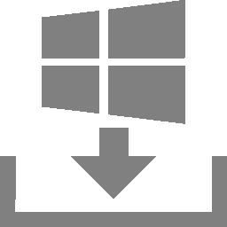
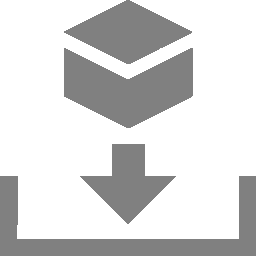
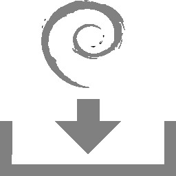

However, not all appliance models support all of these menu options.
The model overview provides information about whether a specific feature is available on the used appliance model.
The report of a task can be displayed as soon as the task has been started by clicking the bar in the column Status. For reading, managing and downloading reports see Chapter 10.
As soon as the status changes to Done the complete report is available. At any time the intermediate results can be reviewed (see Chapter 10.2.1).
Note
It can take a while for the scan to complete. The page is refreshing automatically if new data is available.
For the information to enter in the input boxes see Chapters 9.2.1 and 9.2.2.
If an e-mail address is entered in the input box Email report to an alert is created sending an e-mail as soon as the task is completed (see Chapter 9.12).
The report of a task can be displayed as soon as the task has been started by clicking the bar in the column Status. For reading, managing and downloading reports see Chapter 10.
As soon as the status changes to Done the complete report is available. At any time the intermediate results can be reviewed (see Chapter 10.2.1).
Note
It can take a while for the scan to complete. The page is refreshing automatically if new data is available.
The name can be chosen freely.
A descriptive name should be chosen if possible.
Possibilities are Mailserver, ClientNetwork, Webserverfarm, DMZ or describing the entered systems in more detail.
Comment
The optional comment allows specifying background information.
It simplifies understanding the configured targets later.
Hosts
Manual entry of the hosts that should be scanned, separated by commas, or importing a list of hosts.
Note
The IP address or the host name is required. In both cases it is necessary that the appliance can connect to the system. If using the host name, the appliance must also be able to resolve the name.
The maximum configurable number of IP addresses is 4096 for most appliance models. For the Greenbone Enterprise 6500, the maximum configurable number of IP addresses is 16777216.
When entering manually the following options are available:
Single IP address, for example 192.168.15.5
Host name, for example mail.example.com
IPv4 address range in long format, for example 192.168.15.5-192.168.15.27
IPv4 address range in short format, for example 192.168.55.5-27
IPv4 address range in CIDR notation, for example 192.168.15.0/24
Note
Because of the maximum configurable number of IP addresses (see above), the maximum subnet mask is /20 for IPv4 if no other hosts are part of the configuration.
If the maximum number of IP addresses is higher, for example for the Greenbone Enterprise 6500, correspondingly larger subnet masks can be configured.
Traditionally, the first IP address (network address, for example 192.168.15.0) and last IP address (broadcast address, for example 192.168.15.255) of a subnet are not included in the number of usable IP addresses and thus are not considered in scans when this notation is used.
If the IP addresses are actually usable and scannable, they must be explicitly added to the scan target, for example 192.168.15.0/24,192.168.15.0,192.168.15.255.
Single IPv6 address, for example fe80::222:64ff:fe76:4cea
IPv6 address range in long format, for example ::12:fe5:fb50-::12:fe6:100
IPv6 address range in short format, for example ::13:fe5:fb50-fb80
IPv6 address range in CIDR notation, for example fe80::222:64ff:fe76:4cea/120
Note
Because of the maximum configurable number of IP addresses (see above), the maximum subnet mask is /116 for IPv6 if no other hosts are part of the configuration.
If the maximum number of IP addresses is higher, for example for the Greenbone Enterprise 6500, correspondingly larger subnet masks can be configured.
Multiple options can be mixed.
If importing from a file, the same syntax can be used.
Entries can be separated with commas or by line breaks.
If many systems have to be scanned, using a file with the hosts is simpler than entering all hosts manually.
The file must use ASCII character encoding.
Alternatively the systems can be imported from the host asset database.
Note
Importing a host from the asset database is only possible if a target is created from the page Hosts (see Chapter 12.1.3).
Exclude Hosts
Manual entry of the hosts that should be excluded from the list mentioned above, separated by commas, or importing a list of hosts.
When entering manually the following options are available:
Single IP address, for example 192.168.15.5
IPv4 address range in long format, for example 192.168.15.5-192.168.15.27
IPv4 address range in short format, for example 192.168.55.5-27
IPv4 address range in CIDR notation, for example 192.168.15.0/24
Single IPv6 address, for example fe80::222:64ff:fe76:4cea
IPv6 address range in long format, for example ::12:fe5:fb50-::12:fe6:100
IPv6 address range in short format, for example ::13:fe5:fb50-fb80
IPv6 address range in CIDR notation, for example fe80::222:64ff:fe76:4cea/120
Note
Entering host names/FQDN is also possible. However, this does not result in an IP address not being scanned – as the scanner is IP address-based – but only excludes the specific host from the vhosts list for the IP address.
Allow simultaneous scanning via multiple IPs
Some services, especially IoT devices, may crash when scanned via multiple connections coming from the same host at the same time.
This can happen, for example if the device is connected via IPv4 and IPv6.
Selecting the radio button No will avoid scanning via several addresses at the same time.
A port list can be created on the fly by clicking next to the drop-down list.
Alive Test
This options specifies the method to check if a target is reachable.
Options are:
Scan Config Default (the alive test method ICMP Ping is used by default)
ICMP Ping
TCP-ACK Service Ping
TCP-SYN Service Ping
ICMP & TCP-ACK Service Ping
ICMP & ARP Ping
TCP-ACK Service & ARP Ping
ICMP, TCP-ACK Service & ARP Ping
Consider Alive
Sometimes there are problems with this test from time to time.
In some environments routers and firewall systems respond to a TCP service ping with a TCP-RST even though the host is actually not alive (see Chapter 9.13).
Network components exist that support Proxy-ARP and respond to an ARP ping.
Therefore this test often requires local customization to the environment.
SSH Credentials
Selection of a user that can log into the target system of a scan if it is a Linux or Unix system.
This allows for an authenticated scan using local security checks (see Chapters 9.3.2 and 9.3).
Elevate Privileges
It is also possible to store credentials for elevated privileges, for example root.
Note
The feature is still experimental.
Depending on the target system and its configuration, the feature may not be reliable.
To use elevated privileges, SSH credentials must be selected first.
Then a new drop-down list is displayed for selecting the elevated credentials.
Default and elevated SSH credentials are not allowed to be the same.
For more requirements and information for elevated privileges, see Chapter 9.3.5.1.
SMB Credentials – Kerberos or NTLM
Selection of a user that can log into the target system of a scan if it is a Microsoft Windows system.
This allows for an authenticated scan using local security checks (see Chapters 9.3.2 and 9.3).
ESXi Credentials
Selection of a user that can log into the target system of a scan if it is a VMware ESXi system.
This allows for an authenticated scan using local security checks (see Chapters 9.3.2 and 9.3).
SNMP Credentials
Selection of a user that can log into the target system of a scan if it is an SNMP aware system.
This allows for an authenticated scan using local security checks (see Chapters 9.3.2 and 9.3).
Note
All credentials can be created on the fly by clicking next to the credentials.
Reverse Lookup Only
Only scan IP addresses that can be resolved into a DNS name.
Reverse Lookup Unify
If multiple IP addresses resolve to the same DNS name the DNS name will only get scanned once.
Note
For reverse lookup unify, all target addresses are checked prior to the scan in order to reduce the number of actual scanned addresses.
For large targets and for networks in which reverse lookup causes delays, this leads to a long phase where the task remains at 1 % progress.
This option is not recommended for large networks or networks in which reverse lookups cause delays.
→ The task is created and displayed on the page Tasks.
The following information can be entered:
Name
The name can be chosen freely.
A descriptive name should be chosen if possible.
Possibilities are Mailserver, ClientNetwork, Webserverfarm, DMZ or describing the entered systems in more detail.
Comment
The optional comment allows for the entry of background information.
It simplifies understanding the configured task later.
Scan Targets
Select a previously configured target from the drop-down list (see Chapter 9.2.1).
Alternatively, the target can be created on the fly by clicking next to the drop-down list.
Alerts
Select a previously configured alert from the drop-down list (see Chapter 9.12).
Status changes of a task can be communicated via e-mail, Syslog, HTTP or a connector.
Alternatively, an alert can be created on the fly by clicking next to the drop-down list.
Schedule
Select a previously configured schedule from the drop-down list (see Chapter 9.10).
The task can be run once or repeatedly at a predetermined time, for example every Monday morning at 6:00 a.m.
Alternatively, a schedule can be created on the fly by clicking next to the drop-down list.
Note
Assigning the same schedule to a high number of tasks can have a negative impact on system performance, potentially even causing a system crash, when the tasks are started by the schedule.
Add results to Assets
Selecting this option will make the systems available to the appliance’s asset management automatically (see Chapter 12).
This selection can be changed at a later point as well.
Apply Overrides
Overrides can be directly applied when adding the results to the asset database (see Chapter 10.8).
Min QoD
Minimum quality of detection for the inclusion of the results in the asset database (see Chapter 10.2.6).
Alterable Task
Allow for modification of the task’s scan target(s), scanner and scan configuration, even if reports were already created.
The consistency between reports can no longer be guaranteed if tasks are altered.
Auto Delete Reports
Maximum number of reports to store.
If the maximum is exceeded, the oldest report is automatically deleted.
The factory setting is Do not automatically delete reports.
Scanner
By default, only the built-in OpenVAS and CVE scanners are supported (see Chapter 9.11).
Sensors can be used as additional scanning engines but need to be configured first (see Chapter 15).
Note
The following options are only relevant for the OpenVAS scanner. The CVE scanner does not support any options.
Scan Config
A scan configuration defines the set of VTs that are executed during a scan.
It also contains general and very specific (expert) parameters for the scan server and for some of the VTs.
The appliance comes with several pre-configured scan configurations for the OpenVAS scanner (see Chapter 9.9).
Only one scan configuration can be configured per task.
Order for target hosts
Select in which order the specified target hosts are processed during vulnerability tests.
Available options are:
Sequential
Random
Reverse
In order to improve the scan progress estimation, the setting Random is recommended (see Chapter 16.2.3).
This setting does not affect the alive test during which active hosts in a target network are identified. The alive test is always random.
Maximum concurrently executed NVTs per host/Maximum concurrently scanned hosts
Select the speed of the scan on one host.
The default values are chosen sensibly.
If more VTs run simultaneously on a system or more systems are scanned at the same time, the scan may have a negative impact on either the performance of the scanned systems, the network or the appliance itself. These values “maxhosts” and “maxchecks” may be tweaked.
Tag
Select a previously configured tag from the drop-down list (see Chapter 7.4) to link it to the task.
The report of a task can be displayed as soon as the task has been started by clicking the bar in the column Status.
For reading, managing and downloading reports see Chapter 10.
As soon as the status changes to Done the complete report is available.
At any time the intermediate results can be reviewed (see Chapter 10.2.1).
Note
It can take a while for the scan to complete.
The page is refreshing automatically if new data is available.
9.3 Configuring an Authenticated Scan Using Local Security Checks¶
An authenticated scan can provide more vulnerability details on the scanned system.
During an authenticated scan the target is both scanned from the outside using the network and from the inside using a valid user login.
During an authenticated scan, the appliance logs into the target system in order to run local security checks (LSC).
The scan requires the prior setup of user credentials.
These credentials are used to authenticate to different services on the target system. In some circumstances the results could be limited by the permissions of the users used.
The VTs in the corresponding VT families (local security checks) will only be executed if the appliance was able to log into the target system.
The local security check VTs in the resulting scan are minimally invasive.
The appliance only determines the risk level but does not introduce any changes on the target system. However, the login by the appliance is probably logged in the protocols of the target system.
The appliance can use different credentials based on the nature of the target.
The most important ones are:
SMB
On Microsoft Windows systems, the appliance can check the patch level and locally installed software such as Adobe Acrobat Reader or the Java suite.
SSH
This access is used to check the patch level on Unix and Linux systems.
ESXi
This access is used for testing of VMware ESXi servers locally.
SNMP
Network components like routers and switches can be tested via SNMP.
The following table lists the required port – given the authenticating service uses the default port – and the allowed credential types (see Chapter 9.3.2) for each authentication method:
Required port
Allowed credential types
SMB
445/TCP, 139/TCP
Username + Password
SSH
22/TCP, configurable in the New Target/Edit Target dialog (see
Chapter 9.2.1)
9.3.1 Advantages and Disadvantages of Authenticated Scans¶
The extent and success of the testing routines for authenticated scans depend heavily on the permissions of the used account.
On Linux systems an unprivileged user is sufficient and can access most interesting information while especially on Microsoft Windows systems unprivileged users are very restricted and administrative users provide more results.
An unprivileged user does not have access to the Microsoft Windows registry and the Microsoft Windows system folder \windows which contains the information on updates and patch levels.
Local security checks are the most gentle method to scan for vulnerability details. While remote security checks try to be least invasive as well, they may have some impact.
Simply stated an authenticated scan is similar to a Whitebox approach.
The appliance has access to prior information and can access the target from within.
Especially the registry, software versions and patch levels are accessible.
A remote scan is similar to a Blackbox approach.
The appliance uses the same techniques and protocols as a potential attacker to access the target from the outside.
The only information available was collected by the appliance itself.
During the test, the appliance may provoke malfunctions to extract any available information on the used software. Example: the scanner may send a malformed request to a service to trigger a response containing further information on the deployed product.
During a remote scan using the scan configuration Full and fast all remote checks are safe.
The used VTs may have some invasive components but none of the used VTs try to trigger a defect or malfunction in the target (see example below).
This is ensured by the scan preference safe_checks=yes in the scan configuration (see Chapter 9.9.4).
All VTs with very invasive components or which may trigger a denial of service (DoS) are automatically excluded from the test.
Example for an Invasive VT
An example for an invasive but safe VT is the Heartbleed VT. It is executed even with safe_checks enabled because the VT does not have any negative impact on the target.
The VT is still invasive because it tests the memory leakage of the target.
If the target is vulnerable, actual memory of the target is leaked.
The appliance does not evaluate the leaked information.
The information is immediately discarded.
Credentials for local security checks are required to allow VTs to log into target systems, for example for the purpose of locally checking the presence of all vendor security patches.
The credentials have to be linked to at least one target. This allows the scan engine to apply the credentials.
The following details of the credentials can be defined:
Name
Definition of the name. The name can be chosen freely.
Comment
An optional comment can contain additional information.
Type
Definition of the credential type. The following types are possible:
Username + Password
Username + SSH Key
SNMP
S/MIME Certificate
PGP Encryption Key
Password only
Allow insecure use
Select whether the appliance can use the credentials for unencrypted or otherwise insecure authentication methods.
Depending on the selected type further options are shown:
Username + Password
Auto-generate
Select whether the appliance creates a random password.
Note
If the radio button Yes is selected, it is not possible to define a password in the input box Password.
Username
Login name used by the appliance to authenticate on the scanned target system.
Note
Only the following characters are allowed for the user name:
All English alphanumeric characters
- (dash)
_ (underscore)
\ (backslash)
. (full stop)
@ (at sign)
This also excludes the German umlauts, which must be replaced as follows:
“ß” → “ss”
“ä” → “a”
“ö” → “o”
“ü” → “u”
Password
Password used by the appliance to authenticate on the scanned target system.
Username + SSH Key
Auto-generate
Select whether the appliance creates a random password.
Note
If the radio button Yes is selected, it is not possible to define a password in the input box Password.
Username
Login name used by the appliance to authenticate on the scanned target system.
Note
Only the following characters are allowed for the user name:
All English alphanumeric characters
- (dash)
_ (underscore)
\ (backslash)
. (full stop)
@ (at sign)
This also excludes the German umlauts, which must be replaced as follows:
“ß” → “ss”
“ä” → “a”
“ö” → “o”
“ü” → “u”
Passphrase
Passphrase of the private SSH key.
Private Key
Upload of the private SSH key.
The key types Ed25519, ECDSA, RSA and DSA are supported.
The key must be in either PEM or OpenSSH format.
For DSA keys, only the OpenSSH format is supported.
To convert a DSA key from PEM format to OpenSSH format, the command ssh-keygen-p-f<private_key> can be used.
This accepts the key in PEM format as input, requests the old passphrase (if one was set) and asks to set a new passphrase, which can be identical to the previous passphrase.
The key is then saved in the default OpenSSH format.
Note
The command mentioned above overwrites the key file.
If the key in PEM format should be kept, it must be backed up first.
SNMP
SNMPv3 requires a user name, an authentication password, and a privacy password, while all older SNMP versions (SNMPv1 and SNMPv2) only require an SNMP community.
Note
Due to the singular nature of the SNMP credentials, it is currently not possible to configure either SNMPv1/v2 or SNMPv3 mode.
This means that the appliance will always try to log in with all SNMP protocol versions.
It is possible to see both the result SNMP Login Successful For Authenticated Checks and the result SNMP Login Failed For Authenticated Checks for a scan, for example if the SNMPv3 login information in the credentials is correct, but the SNMPv1/2 information is incorrect.
SNMP Community
Community for SNMPv1 or SNMPv2c.
Username
User name for SNMPv3.
Note
Only the following characters are allowed for the user name:
All English alphanumeric characters
- (dash)
_ (underscore)
\ (backslash)
. (full stop)
@ (at sign)
This also excludes the German umlauts, which must be replaced as follows:
“ß” → “ss”
“ä” → “a”
“ö” → “o”
“ü” → “u”
Password
Password for SNMPv3.
Privacy Password
Password for the encryption for SNMPv3.
Auth Algorithm
Selection of the authentication algorithm (MD5 or SHA1).
Privacy Algorithm
Selection of the encryption algorithm (AES, DES or none).
S/MIME Certificate
S/MIME Certificate
Upload of the certificate file.
The certificate file must fulfill the following conditions:
PEM encoded (a binary DER file cannot be used)
Using the X.509 format
Valid (not expired)
Combines all certificates of the chain (root certificate and all intermediate certificates)
If the certificate originally came in a bundled format that included the private key as well, only the unencrypted certificate must be uploaded.
PGP Encryption Key
PGP Public Key
Upload of the public key file of the PGP key pair.
Password only
Password
Password used by the appliance to authenticate on the scanned target system.
SMB (Kerberos)
Note
In order to enable authentication via Kerberos on a target, the appliance must use a DNS server that is capable of doing a reverse lookup of the target.
If the scan is performed using a sensor appliance, the sensor appliance must also fulfill this requirement.
If the authentication via Kerberos fails, NTLM authentication will be tried as a fallback.
Username
Definition of the login name used by the appliance to authenticate on the scanned target system.
Note
Only the following characters are allowed for the user name:
All English alphanumeric characters
- (dash)
_ (underscore)
\ (backslash)
. (full stop)
@ (at sign)
This also excludes the German umlauts, which must be replaced as follows:
“ß” → “ss”
“ä” → “a”
“ö” → “o”
“ü” → “u”
Password
Password used by the appliance to authenticate on the scanned target system.
Realm
Kerberos realm serviced by one or more of the Key Distribution Centers (KDCs).
Usually, it is the DNS domain.
The realm must be entered in uppercase letters, for example, EXAMPLE.COM.
Key Distribution Center
The Key Distribution Center (KDC) verifies the user name and password and returns an encrypted authentication ticket.
Multiple KDCs can be added.
KDCs can be specified by their IP address or by their host name.
Press Enter after entering the IP address or host name of a KDC to add it to the list.
The ports 88/UDP und port 88/TCP must be open on the KDC.
All existing credentials can be displayed by selecting Configuration > Credentials in the menu.
For all credentials the following information is displayed:
Name
Name of the credentials.
Type
Chosen credential type.
Allow insecure use
Indication whether the appliance can use the credentials for unencrypted or otherwise insecure authentication methods.
Login
User name for the credentials if a credential type that requires a user name is chosen.
For all credentials the following actions are available:
Move the credentials to the trashcan. Only credentials which are currently not used can be moved to the trashcan.
Edit the credentials.
Clone the credentials.
Export the credentials as an XML file.
Depending on the chosen credential type (see Chapter 9.3.2.1) more actions may be available:
 Download an EXE package for Microsoft Windows. This action is available if Username + Password was chosen.
 Download an RPM package for Red Hat Enterprise Linux and its derivates. This action is available if Username + SSH Key was chosen.
 Download a Debian package for Debian GNU/Linux and its derivates. This action is available if Username + SSH Key was chosen.
Download a public key. This action is available if Username + SSH Key was chosen.
These installation packages simplify the installation and creation of accounts for authenticated scans.
They create the user and the most important permissions for the authenticated scan and reset them during uninstalling.
Note
If the auto-generation of passwords is enabled (see Chapter 9.3.2.1), the packages have to be used, otherwise the usage is optional.
Note
By clicking or below the list of credentials more than one set of credentials can be moved to the trashcan or exported at a time. The drop-down list is used to select which credentials are moved to the trashcan or exported.
Details Page
Click on the name of a set of credentials to display the details of the credentials. Click to open the details page of the credentials.
The remote registry service must be started in order to access the registry.
This is achieved by configuring the service to automatically start up.
If an automatic start is not preferred, a manual startup can be configured.
In that case, the service is started while the system is scanned by the appliance and afterwards it is disabled again.
To ensure this behavior, the following information about LocalAccountTokenFilterPolicy must be considered.
It is necessary that for all scanned systems the file and printer sharing is activated.
If using Microsoft Windows XP, take care to disable the setting Use Simple File Sharing.
For individual systems not attached to a domain the following registry key must be set:
On systems with domain controller the user account in use must be a member of the group Domain Administrators to achieve the best possible results.
Due to the permission concept it is not possible to discover all vulnerabilities using the Local Administrator or the administrators assigned by the domain.
Alternatively follow the instructions in Chapter 9.3.3.2.
→ Should a Local Administrator be selected – which it explicitly not recommended – it is mandatory to set the following registry key as well:
Generated install package for credentials:
The installer sets the remote registry service to auto start.
If the installer is executed on a domain controller, the user account will be assigned to the group BUILTIN/Administrators (SIDS-1-5-32-544).
An exception rule for the appliance on the Microsoft Windows firewall must be created.
Additionally, on XP systems the service File and Printer Sharing must be set to enabled.
Generated install package for credentials:
During the installation, the installer offers a dialog to enter the appliance’s IP address.
If the entry is confirmed, the firewall rule is configured.
The service File and Printer Sharing will be enabled in the firewall rules.
Powershell execution privileges on a target system may be required for the account utilized in an authenticated scan.
Policy and vulnerability tests may occasionally execute Powershell commands to increase the accuracy of results, requiring privileges for the duration of a scan.
For compliance audits targeting Windows operating systems, it is recommended to set the Maximum concurrently executed NVTs per host/Maximum concurrently scanned hosts to 1 in order to
maximize the accuracy of the results (see Chapter 11.2.1.1).
For a fully working Windows Management Instrumentation (WMI) access which is used for, for example file search or policy scans, the following settings are required:
Verify that the user or the group of the scan user is allowed to access WMI remotely.
To fully utilize the appliance, it must be verified that the Impacket tooling suite can be used.
This ensures that other security products do not flag the execution of Powershell commands via Impacket as malicious.
If possible, necessary exceptions should be configured.
Additionally, it must be ensured that the ADMIN$ share is accessible for reading and writing.
To ensure the full functionality of the executed Powershell commands, the target should at least meet the Powershell version PS5.1 (WMF5.1).
Commands may also work on targets with a lower Powershell version, but this cannot be guaranteed.
For authentication via Kerberos credentials, the following requirements must be fulfilled:
The user name and password entered when creating Kerberos credentials has to be of a domain account.
It is highly recommended that the account has local administrator rights on the target.
For scanning a domain controller or similar systems, local administrator rights may not be sufficient.
In this case, an account with domain administrator rights is recommended.
To work properly, Kerberos requires that the target is part of a functioning Microsoft Windows domain with a working domain controller, DNS infrastructure, and network.
9.3.3.2 Configuring a Domain Account for Authenticated Scans¶
For authenticated scans of Microsoft Windows target systems, it is highly recommended to use a domain account with a domain policy that grants local administrator privileges.
This has several advantages:
A domain policy only needs to be created once and can then be applied or revoked for different user accounts.
Editing the Microsoft Windows registry locally is no longer required. User administration is thus centralized, which saves time in the long term and reduces possible configuration errors.
From a vulnerability assessment perspective, only a domain account allows for the detection of domain-related scan results. These results will be missing if using a local user account.
There are also several security advantages to using a domain account with the domain policy recommended by Greenbone: the corresponding user may not log in locally or via the
remote desktop protocol (RDP), limiting possible attack vectors.
Additionally, the user credentials are secured via Kerberos, while the password of a local user account is at much greater risk of being exposed through exploits.
In order to use a domain account for authenticated scans or audits on a Microsoft Windows target, the target system must be part of a domain, and the following configuration must be made on the target system.
Creating a Security Group
Log into a domain controller and open Active Directory Users and Computers.
Select Action > New > Group in the menu.
Enter GreenboneLocalScan in the input box Name.
Select Global for Group Scope and Security for Group Type.
Add the account used for the local authenticated scans by the appliance under Microsoft Windows to the group.
Click OK.
Creating a Group Policy Object (GPO)
In the left panel open the console Group Policy Management.
Right click Group Policy Objects and select New.
Enter GreenboneLocalSecRights in the input box Name (see Fig. 9.8).
Fig. 9.8 Creating a new Microsoft Windows group policy object for Greenbone scans¶
Click OK.
Configuring the Policy
Click the policy Greenbone Local SecRights and select Edit.
Select Computer Configuration > Policies > Windows Settings > Security Settings in the left panel.
Click Restricted Groups and select Add Group.
Click Browse… and enter GreenboneLocalScan in the input box (see Fig. 9.9).
Fig. 9.14 Selecting the group Greenbone Local Scan¶
Select This object and child objects in the drop-down list Apply to.
Deactivate all checkboxes for Allow and activate the checkboxes Set Value, Create Subkey, Create Link, Delete, Change Permissions and Take Ownership for Deny (see Fig. 9.15).
Based on the fact that write permissions to the registry and system drive have been removed, the following two tests will no longer work:
Leave information on scanned Windows hosts (OID 1.3.6.1.4.1.25623.1.0.96171)
This test, if desired, creates information about the start and end of a scan under HKLM\Software\VulScanInfo.
Due to denying write access to HKLM this is no longer possible.
If the test should be possible, the GPO must be adjusted respectively.
Windows file Checksums (OID 1.3.6.1.4.1.25623.1.0.96180)
This test, if desired, saves the tool ReHash under C:\Windows\system32 (for 32-bit systems) or C:\Windows\SysWOW64 (for 64-bit systems).
Due to denying write access this is no longer possible.
If the test should be possible, the tool must be saved separately or the GPO must be adjusted respectively.
9.3.3.4 Scanning Without Domain Administrator and Local Administrator Permissions¶
It is possible to build a GPO in which the user also does not have any local administrator permissions.
But the effort to add respective read permissions to each registry branch and folder is huge.
Unfortunately, inheriting of permissions is deactivated for many folders and branches.
Additionally, these changes can be set by GPO but cannot be removed again (tattooing GPO).
Specific permissions could be overwritten so that additional problems could occur as well.
Building a GPO in which the user does not have any local administrator permissions does not make sense from a technical and administrative point of view.
If a vCenter Server Appliance (VCSA) is used to control ESXi hosts and users are created on the VCSA, they are only known on the VCSA and not on the ESXi hosts.
Scan users must be created on each ESXi host that will be scanned.
By default, local ESXi users are limited to read-only roles.
Either an administrative account or a read-only role with permission to global settings has to be used.
A read-only role with permission to global settings can be set up as follows:
Open the web interface of the VMware ESXi instance and log in.
Select Host > Manage in the Navigator column on the left.
Select the register Security & users.
Select Roles in the left menu panel (see Fig. 9.18).
9.3.5 Requirements on Target Systems with Linux/Unix¶
For authenticated scans on Linux or Unix systems, regular user access is usually enough.
The login is performed via SSH.
The authentication is done either with passwords or a private SSH key stored on the appliance.
A remote SSH server should have the following defaults configured in the file sshd_config:
MaxSessions: 10
MaxAuthTries: 6
When using non-default and lower values, failed logins may occur.
Generated installation package for credentials:
the install package for Linux distributions based on Debian is a DEB file, the install package for Linux distributions based on Red Hat is an RPM file. Both install packages create a new user without any specific permissions.
A public SSH key that is created on the appliance is stored in the user’s home folder.
For users of other Linux distributions or Unix derivatives, the public key is offered for download.
Creating a user and saving the public key with the proper file permissions is the responsibility of the user.
In both cases it must be made sure that public key authentication is not prohibited by the SSH daemon.
The line PubkeyAuthenticationno must not be present.
Existing SSH key pairs may also be used. SSH key pairs can be generated using the command ssh-keygen on Linux or puttygen.exe if using PuTTY on Microsoft Windows.
To use an existing SSH key pair for authentication, the private key must be supplied when the credentials are created.
The key types Ed25519, ECDSA, RSA and DSA are supported.
The private SSH key must be in either PEM or OpenSSH format.
For DSA keys, only the OpenSSH format is supported.
For scans that include policy testing, root permission or the membership in specific groups (often wheel) may be necessary.
For security reasons, many configuration files are only readable by super users or members of specific groups.
The more permissions a user has, the more results and settings can be detected on a system.
In some cases root user access may be required.
The following commands are executed with root user access during an authenticated scan.
Important
This list is not static. New or changed VTs may add new commands at any time.
Depending on the found software, additional commands may be executed.
The executed commands depend on the Linux distribution and the selected scan configuration.
bash
cat
date
dpkg
egrep
find
grep
host
id
ip
lastlog
locate
ls
md5sum
mlocate
netstat
perl
ps
rpm
sh
sha1sum
slocate
uname
uptime
whereis
which
The installation of the package locate (alternatively mlocate) to provide the command locate/mlocate on the target system is recommended.
The use of this command reduces calls to the command find used to search for files and thus, improves the search performance and lowers the resource usage on the target system.
For the commands to work, the corresponding database permissions and regular database updates, for example via a cron job, may need to be configured.
9.3.5.1 Requirements and Background Information for the Elevate Privileges Feature¶
The following must be considered when using the Elevated Privileges feature:
The elevated user’s rights must be configured on the target system beforehand.
The appliance only executes the command su-<username> which has no control over the rights of use.
If elevated SSH credentials are configured, the default SSH credentials are only used for logging in on the target system.
The elevated credentials are used for the scan.
The programs stty, unset and bind must be available/accessible for the elevated-privileges user.
The elevated-privileges user must be allowed to change the login prompt via an exportPS1= prepended to the commands sent.
If elevated SSH credentials are configured, they are always used even if the scan configuration does not contain relevant vulnerability tests.
Default and elevated SSH credentials are not allowed to be the same.
The feature is currently only supported for the “bash” shell.
Note
The Elevate Privileges feature is still experimental.
Depending on the target system and its configuration, the feature may not be reliable.
Using elevated SSH credentials may create increased load on the appliance, as well as an increased number of SSH connections from the appliance to the target system.
This may need to be taken into account for firewalls, intrusion detection and logging systems.
In addition, the duration of scans using elevated SSH credentials can be much longer than scans without elevated credentials due to the system load mentioned above.
9.3.5.2 (Security) Best Practices for SSH-Based Authenticated Scans¶
When performing SSH-based authenticated scans, the following security best practices should be applied.
It is not recommended to scan an entire network range with SSH credentials assigned to a target.
Instead, targeted scans of the known systems should be carried out by providing the specific IP addresses.
As few permissions as possible should be used, for example by using a dedicated scanning user instead of the root user.
Only trusted system should be scanned, for example no public systems that can be accessed by any user.
9.3.6 Requirements on Target Systems with Cisco OS¶
The appliance can check network components like routers and switches for vulnerabilities as well.
While the usual network services are discovered and checked via the network, some vulnerabilities can only be discovered by an authenticated scan.
For the authenticated scan, the appliance can use either SNMP or SSH.
The appliance can use the SNMP protocol to access the Cisco network component.
The appliance supports SNMPv1, v2c and v3.
SNMP uses the port 161/UDP.
The default port list does not include any UDP port.
Therefore, this port is ignored during the vulnerability scan using the scan configuration Full and fast and no SNMP check is enabled.
To scan network components the port list should be modified to include at least the following ports:
22/TCP SSH
80/TCP 8080/TCP HTTP
443/TCP 8443/TCP HTTPS
2000/TCP SCCP
2443/TCP SCCPS
5060/TCP 5060/UDP SIP
5061/TCP 5061/UDP SIPS
67/UDP DHCP Server
69/UDP TFTP
123/UDP NTP
161/UDP SNMP
162/UDP SNMP Traps
500/UDP IKE
514/UDP Syslog
546/UDP DHCPv6
6161/UDP 6162/UDP Unified CM
The administrator can set up special port lists used only for such network components.
The appliance needs to access only very few objects from the SNMP tree.
For a less privileged access an SNMP view should be used to constrain the visibility of the SNMP tree for the appliance.
The following two examples explain how to set up the view using either a community string or an SNMPv3 user.
To use an SNMP community string the following commands are required on the target:
# configure terminal
Using an access list the usage of the community can be restricted. The appliance’s IP address is 192.168.222.74 in this example:
(config)# access-list 99 permit 192.168.222.74
The view gsm should only allow accessing the system description:
SNMPv3 requires the setup of a group first. Here the group gsmgroup is linked to the view gsm and the access list 99:
(config)# snmp-server group gsmgroup v3 priv read gsm access 99
Now the user can be created supplying the password gsm-password and the encryption key gsm-encrypt. The authentication is done using MD5 while the encryption is handled by AES128:
(config)# snmp-server user gsm-user gsm-group v3 auth md5 gsm-password privaes128gsm-encrypt
To configure either the community or the SNMPv3 user on the appliance, the administrator selects Configuration > Credentials in the menu (see Chapter 9.3.2).
The authenticated scan can be performed via SSH as well.
If using SSH, the usage of a special unprivileged user is recommended.
The appliance currently requires only the command showversion to retrieve the current version of the firmware of the device.
To set up a less privileged user who is only able to run this command, several approaches are possible. The following example uses the role-based access control feature.
Note
Before using the following example, make sure all side effects of the configuration are understood. If used without verification, the system may restrict further logins via SSH or console.
To use role-based access control AAA and views have to be enabled:
Finally, enable SSH logins using the following commands:
(config)# line vty 0 4(config-line)# transport input ssh(config-line)# Crtl-Z
Note
For executing a full scan, for example with the scan configuration Full and fast, the setting ssh server rate-limit must be set to 240.
Before scanning, this value should be checked and adjusted if necessary.
The credentials of the user must be entered on the appliance. Select Configuration > Credentials in the menu and create the appropriate user (see Chapter 9.3.2).
Link the credentials to the target to be used as SSH credentials.
9.3.7 Requirements on Target Systems with Huawei VRP¶
The appliance can check network components like routers and switches for vulnerabilities as well.
While the usual network services are discovered and checked via the network, some vulnerabilities can only be discovered by an authenticated scan.
For the authenticated scan, the appliance can use either SNMP or SSH.
Note
The commands in this chapter serve as an example and should work on most Huawei routers.
Depending on the software version or hardware, some commands may differ (for example the order of the parameters or values), may not be necessary, or may not be available.
More information can be found in the related documentation for the respective device and software version.
The appliance can use the SNMP protocol to access the Huawei network component.
The appliance supports SNMPv1, v2c and v3.
SNMP uses the port 161/UDP.
The default port list does not include any UDP port.
Therefore, this port is ignored during the vulnerability scan using the scan configuration Full and fast and no SNMP check is enabled.
To scan network components, the port list should be modified to include at least the following ports:
22/TCP SSH
80/TCP 8080/TCP HTTP
443/TCP 8443/TCP HTTPS
2000/TCP SCCP
2443/TCP SCCPS
5060/TCP 5060/UDP SIP
5061/TCP 5061/UDP SIPS
67/UDP DHCP Server
69/UDP TFTP
123/UDP NTP
161/UDP SNMP
162/UDP SNMP Traps
500/UDP IKE
514/UDP Syslog
546/UDP DHCPv6
The administrator can set up special port lists used only for such network components.
The appliance needs to access only very few objects from the SNMP tree.
For a less privileged access, an SNMP view should be used to constrain the visibility of the SNMP tree for the appliance.
The following two examples explain how to set up the view using either a community string or an SNMPv3 user.
To use an SNMP community string the following commands are required on the target:
<HUAWEI>system-view
Using an access list the usage of the community can be restricted. The appliance’s IP address is 192.168.222.74 in this example:
Now the user can be created supplying the password gsm-password and the encryption key gsm-encrypt.
The authentication is done using MD5 while the encryption is handled by AES128.
This is done in three steps:
To configure either the community or the SNMPv3 user on the appliance, the administrator selects Configuration > Credentials in the menu (see Chapter 9.3.2).
The authenticated scan can be performed via SSH as well.
If using SSH, the usage of a special unprivileged user is recommended.
The appliance currently requires only the commands displaydevice, displayversion and displaypatch-information to retrieve the device’s current firmware version.
Note
If a compliance scan is performed, the following additional commands may be used:
To set up a less privileged user who is only able to run this command, several approaches are possible. The following example uses the role-based access control feature.
Note
Before using the following example, make sure all side effects of the configuration are understood. If used without verification, the system may restrict further logins via SSH or console.
The following commands create a restricted view including just the commands displaydevice, displayversion and displaypatch-information.
The supplied password Hello-secret123 is not critical.
Depending on the security settings the password for gsm-view has to be changed on the first login.
This should be checked by logging in manually once via SSH.
The credentials of the user need to be entered on the appliance. Select Configuration > Credentials in the menu and create the appropriate user (see Chapter 9.3.2).
Link the credentials to the target to be used as SSH credentials.
9.3.8 Requirements on Target Systems with EulerOS¶
For authenticated scans on EulerOS, regular user access is usually enough.
The login is performed via SSH.
The authentication is done either with passwords or a private SSH key stored on the appliance.
Generated installation package for credentials:
the install package for EulerOS is an RPM file. The install package creates a new user without any specific permissions.
A public SSH key that is created on the appliance is stored in the user’s home folder.
In both cases it needs to be made sure that public key authentication is not prohibited by the SSH daemon.
The line PubkeyAuthenticationno must not be present.
Existing SSH key pairs may also be used. SSH key pairs can be generated using the command ssh-keygen on EulerOS or puttygen.exe if using PuTTY on Microsoft Windows.
To use an existing SSH key pair for authentication, the private key must be supplied when the credentials are created.
The key types Ed25519, ECDSA, RSA and DSA are supported.
The private SSH key must be in either PEM or OpenSSH format.
For DSA keys, only the OpenSSH format is supported.
For scans that include policy testing, root permission or the membership in specific groups (often wheel) may be necessary.
For security reasons, many configuration files are only readable by super users or members of specific groups.
The more permissions a user has, the more results and settings can be detected on a system.
In some cases root user access may be required.
The following commands are executed with root user access during an authenticated scan.
Important
This list is not static. New or changed VTs may add new commands at any time.
Depending on the found software, additional commands may be executed.
bash
cat
date
dpkg
egrep
find
grep
host
id
ip
lastlog
locate
ls
md5sum
mlocate
netstat
perl
ps
rpm
sh
sha1sum
slocate
uname
uptime
whereis
which
The installation of the package locate (alternatively mlocate) to provide the command locate/mlocate on the target system is recommended.
The use of this command reduces calls to the command find used to search for files and thus, improves the search performance and lowers the resource usage on the target system.
For the commands to work, the corresponding database permissions and regular database updates, for example via a cron job, may need to be configured.
9.3.9 Requirements on Target Systems with GaussDB¶
Note
It has to be ensured that the scan is performed by a user that has GaussDB executing permissions.
Not every vulnerability justifies a new scan of the network or of individual systems.
If the appliance has already obtained information about vulnerabilities by previous scans, it can make a prognosis of which security risks could currently exist.
Using the CVE scanner allows for a quick prediction of possible security risks without the need of another vulnerability scan.
This is especially interesting for environments in which most vulnerabilities have been removed or remediated by using the appliance.
If new security risks are predicted, an actual vulnerability scan can be run to verify the prognosis.
The CVE scanner checks the CPEs of the target hosts present in the latest report for the same IP address for assigned CVEs present in the current SecInfo (see Chapter 13).
Only reports of tasks that have the Add results to Assets setting enabled will be included.
It is not relevant whether the setting is enabled before or after the scan.
Note
The CVE scanner might show false positives for the following reasons:
The scanner does not check whether the vulnerability actually exists.
The scanner has no capabilities to detect “backported” security fixes, for example on Unix-like systems, because it depends on the National Vulnerability Database (NVD), which does not maintain this fixed status and
because there is no exposure of the fixed status in the version of the product.
Note
There are some prerequisites for successfully running a CVE scan:
As long as the CVE is not analyzed yet (see the corresponding entry in the NVD),
no results are expected for a CVE when running a CVE scan.
Additionally, a correct CPE must be assigned to the CVE in the NVD.
In case of doubt, the CPE-CVE assignment should be checked manually on the related NVD web page(s).
The asset database requires current data for the CVE scanner.
For detecting the products, a full scan, for example with the scan configuration Full and fast, must be performed before running the CVE scan.
Whether a product was detected can be checked in the Applications register of the full scan’s report.
For the full scan, the task option Add results to Assets must be activated, so that the results are added to the asset database and are available to the CVE scanner.
Running a full scan with authentication may increase the results found by the CVE scan.
A full scan of the systems should be run regularly.
→ The scan is running. For the status of a task see Chapter 9.8.
Tip
The report of a task can be displayed as soon as the task has been started by clicking the bar in the column Status. For reading, managing and downloading reports see Chapter 10.
As soon as the status changes to Done the complete report is available. At any time the intermediate results can be reviewed (see Chapter 10.2.1).
Note
It can take a while for the scan to complete. The page is refreshing automatically if new data is available.
When the scan is completed select Scans > Reports in the menu.
Click on the date of the report to show the results.
→ The report shows each found CVE with its identifier (see Fig. 9.21).
All existing container tasks can be displayed by selecting Scans > Tasks in the menu.
Note
Container tasks can be identified by in the column Status.
For all container tasks the following actions are available:
Import reports to the container task.
Move the container task to the trashcan.
Edit the container task.
Clone the container task.
Export the container task as an XML file.
Note
By clicking or below the list of tasks more than one task can be moved to the trashcan or exported at a time. The drop-down list is used to select which tasks are moved to the trashcan or exported.
Details Page
Click on the name of a container task to display the details of the container task. Click to open the details page of the container task.
All existing targets can be displayed by selecting Configuration > Targets in the menu.
For all targets the following information is displayed:
Name
Name of the target.
Hosts
Hosts that are scanned if the target is used for a scan (see Chapter 9.2.2).
IPs
Number of scanned hosts.
Port List
Port list used if the target is used for a scan (see Chapter 9.2.2).
Credentials
Credentials configured for the target.
For all targets the following actions are available:
Move the target to the trashcan. Only targets which are currently not used can be moved to the trashcan.
Edit the target.
Clone the target.
Export the target as an XML file.
Note
By clicking or below the list of targets more than one target can be moved to the trashcan or exported at a time. The drop-down list is used to select which targets are moved to the trashcan or exported.
Details Page
Click on the name of a target to display the details of the target. Click to open the details page of the target.
If applications run on unusual ports and they should be monitored and tested with the appliance, the default port lists should be adapted.
If necessary, an individual port list including the desired port can be created.
All default port lists by Greenbone are data objects that are distributed via the feed.
They are downloaded and updated with each feed update.
If no default port lists are available, a feed update may be necessary, or the Feed Import Owner may need to be set (see Chapter 6.2.1.10.1).
Default port lists cannot be edited.
Additionally, they can only be deleted temporarily by the Feed Import Owner or by a super administrator.
During the next feed update, they will be downloaded again.
Note
To permanently delete a default port list, the Feed Import Owner has to delete it.
Afterwards the Feed Import Owner has to be changed to (Unset) (see Chapter 6.2.1.10.1).
In addition to the default port lists, custom port lists can be created (see Chapter 9.7.1) or imported (see Chapter 9.7.2).
The following details of the port list can be defined:
Name
Definition of the name. The name can be chosen freely.
Comment
An optional comment can contain additional information.
Port Ranges
Manual entry of the port ranges or importing of a list of the port ranges.
If entering manually, the port ranges are separated by commas.
If importing from a file, the entries can be separated with commas or line breaks.
The file must use ASCII character encoding.
Each value in the list can be a single port (for example 7) or a port range (for example 9-11).
These options can be mixed (for example 5,7,9-11,13).
An entry in the list can be preceded by a protocol specifier (T: for TCP, U: for UDP), for example T:1-3,U:7,9-11 (TCP ports 1, 2 and 3, UDP ports 7, 9, 10 and 11).
If no specifier is given, TCP is assumed.
All existing port lists can be displayed by selecting Configuration > Port Lists in the menu.
For all port lists the following information is displayed:
Name
Name of the port list.
Port Counts – Total
Total number of ports in the port list.
Port Counts – TCP
Number of TCP ports in the port list.
Port Counts – UDP
Number of UDP ports in the port list.
For all port lists the following actions are available:
Move the port list to the trashcan. Only port lists which are currently not used can be moved to the trashcan. As long as the port list is not deleted from the trashcan, it is not downloaded anew during the next feed update.
Edit the port list. Only self-created port lists which are currently not used can be edited.
Clone the port list.
Export the port list as an XML file.
Note
By clicking or below the list of port lists more than one port list can be moved to the trashcan or exported at a time. The drop-down list is used to select which port lists are moved to the trashcan or exported.
Details Page
Click on the name of a port list to display the details of the port list. Click to open the details page of the port list.
The following registers are available:
Information
General information about the port list.
Port Ranges
All port ranges included in this port list.
The first and the last port of a range as well as the protocol specifier are displayed.
Edit the port list. Only self-created port lists which are currently not used can be edited.
Move the port list to the trashcan. Only port lists which are currently not used can be moved to the trashcan. As long as the port list is not deleted from the trashcan, it is not downloaded anew during the next feed update.
For all tasks the following information is displayed:
Name
Name of the task.
The following icons may be displayed:
The task is marked as alterable. The task’s scan target(s), scanner and scan configuration can be edited, even if reports were already created.
The task is configured to run on a remote scanner (see Chapter 15).
The task is visible to one or more other user(s).
The task is owned by another user.
Status
Current status of the task. The following status bars are possible:
There are no runs/reports for the task.
The task was just started.
The appliance is preparing the scan.
Tasks with this status cannot be stopped, resumed, or deleted.
The task was added to the waiting queue.
In some cases, it may remain in the queue.
For more information see Chapter 16.3.
The task is currently running.
The percent value is based on the number of VTs executed on the selected hosts.
For this reason the value does not necessarily correlate with the time spent.
The scan or the container task upload is complete and the appliance is processing data.
Tasks with this status cannot be stopped, resumed, or deleted.
The task has been completed successfully.
The task was requested to stop recently.
However, the scan engine has not yet reacted to this request yet.
Tasks with this status cannot be stopped, resumed, or deleted.
The task was stopped.
The latest report is possibly not yet complete.
Other reasons for this status could be the reboot of the appliance or a power outage.
After restarting the scanner, the task will be resumed automatically.
The task was deleted.
The actual deletion process can take some time as reports need to be deleted as well.
Tasks with this status cannot be stopped, resumed, or deleted.
An error has occurred and the task was interrupted.
The latest report is possibly not complete yet or is missing completely.
The task is a container task.
Reports
Number of reports for the task. By clicking on the number of reports the page Reports is opened.
A filter is applied to show only the reports for the selected task.
Last Report
Date and time of the latest report. By clicking it the details page of the latest report is opened.
Severity
Qualitative measure of a vulnerability’s severity according to the Common Vulnerability Scoring System (CVSS) (see Chapter 13.2.3).
This includes a severity score, which is a number from 0.0 to 10.0, with 10.0 being the most severe, and a severity class based on the score:
High: 7.0–10.0
Medium: 4.0–6.9
Low: 0.1–3.9
Log: 0.0
Displayed is the highest severity found by a scan of the task.
Trend
Change of vulnerabilities between the newest and the second newest report (see Chapter 10.5).
For all tasks the following actions are available:
Start the task. Only currently not running tasks can be started.
Stop the currently running task. All discovered results will be written to the database.
Show details of the assigned schedule (only available for scheduled tasks, see Chapter 9.10).
Resume the stopped task. All unfinished hosts are scanned completely anew. The data of hosts that were already fully scanned is kept.
Move the task to the trashcan.
Edit the task.
Clone the task.
Export the task as an XML file.
Note
By clicking or below the list of tasks more than one task can be moved to the trashcan or exported at a time. The drop-down list is used to select which tasks are moved to the trashcan or exported.
Details Page
Click on the name of a task to display the details of the task. Click to open the details page of the task.
On the details page of a task permissions for the task can be managed as follows:
Note
By default, regular users cannot create permissions for other users as they do not have access to the user database.
To be able to create permissions for other users, a user must have the global and the specific get_users permission (see Chapter 8.4.3).
Select Scans > Tasks in the menu.
Click on the name of a task to display the details of the task. Click to open the details page of the task.
Click on the register Permissions.
In the section Permissions click .
Select the permission type in the drop-down list Grant.
Select the radio button User, Group or Role and select the user/role/group in the respective drop-down list (see Fig. 9.27).
A scan configuration defines the set of VTs that are executed during a scan.
It also contains general and very specific (expert) parameters for the scan server and for some of the VTs.
The appliance comes with various predefined scan configurations.
They can be customized and new scan configurations can be created.
All default scan configurations by Greenbone are data objects that are distributed via the feed.
They are downloaded and updated with each feed update.
If no default scan configurations are available, a feed update may be necessary, or the Feed Import Owner may need to be set (see Chapter 6.2.1.10.1).
Default scan configurations cannot be edited.
Additionally, they can only be deleted temporarily by the Feed Import Owner or by a super administrator.
During the next feed update, they will be downloaded again.
Note
To permanently delete a default scan configuration, the Feed Import Owner has to delete it.
Afterwards the Feed Import Owner has to be changed to (Unset) (see Chapter 6.2.1.10.1).
Note
In addition to the default scan configurations, custom scan configurations can be created (see Chapter 9.9.2) or imported (see Chapter 9.9.3).
By default, the following scan configurations are available:
Empty
This scan configuration is an empty template containing no VTs.
It can be cloned and used for a completely individual created scan configuration.
The VT families are static, which means that new VTs of the chosen VT families are not added and used automatically.
Base
This scan configuration only uses VTs which collect information about the target system.
No vulnerabilities are being detected.
It can be cloned and used for a completely individual created scan configuration.
The used port scanner is Ping Host which detects whether a host is alive.
Additionally, information about the operating system is collected.
The VT families are static, which means that new VTs of the chosen VT families are not added and used automatically.
Discovery
This scan configuration only uses VTs that provide information about the target system.
No vulnerabilities are being detected.
Amongst others, the collected information contains information about open ports, used hardware, firewalls, used services, installed software and certificates.
The system is inventoried completely.
The VT families are dynamic, which means that new VTs of the chosen VT families are added and used automatically.
Host Discovery
This scan configuration is used to detect target systems.
No vulnerabilities are being detected.
The used port scanner is Ping Host which detects whether a host is alive.
The VT families are static, which means that new VTs of the chosen VT families are not added and used automatically.
System Discovery
This scan configuration is used to detect target systems including installed operating systems and used hardware.
No vulnerabilities are being detected.
The used port scanner is Ping Host which detects whether a host is alive.
The VT families are static, which means that new VTs of the chosen VT families are not added and used automatically.
Full and fast
For many environments this is the best option to start with.
This scan configuration is based on the information gathered in the previous port scan and uses almost all VTs.
Only VTs that will not damage the target system are used.
VTs are optimized in the best possible way to keep the potential false negative rate especially low.
The other “Full” configurations only provide more value in rare cases but with much higher effort.
The VT families are dynamic, which means that new VTs of the chosen VT families are added and used automatically.
Full and fast ultimate
This scan configuration expands the scan configuration Full and fast with VTs that could disrupt services or systems or even cause shutdowns.
The VT families are dynamic, which means that new VTs of the chosen VT families are added and used automatically.
This scan configuration may not always be absolutely reliable depending on environmental conditions, which may be reflected in an increased false-positive rate.
Narrowing down the suspected false-positive edge cases may require manual analysis and setting overrides (see Chapter 10.8).
Full and very deep
This scan configuration is based on the scan configuration Full and fast but the results of the port scan or the application/service detection do not have an impact on the selection of the VTs.
Therefore, VTs that wait for a timeout or test for vulnerabilities of an application/service which were not detected previously are used.
A scan with this scan configuration is very slow.
The VT families are dynamic, which means that new VTs of the chosen VT families are added and used automatically.
Full and very deep ultimate
This scan configuration expands the scan configuration Full and very deep with dangerous VTs that could cause possible service or system disruptions.
A scan with this scan configuration is very slow.
The VT families are dynamic, which means that new VTs of the chosen VT families are added and used automatically.
This scan configuration may not always be absolutely reliable depending on environmental conditions, which may be reflected in an increased false-positive rate.
Narrowing down the suspected false-positive edge cases may require manual analysis and setting overrides (see Chapter 10.8).
Any custom scan configuration with the scanner preference safe_checks set to no (see Chapter 9.9.4.1) may not always be absolutely reliable depending on environmental conditions, which may be reflected in an increased false-positive rate.
Narrowing down the suspected false-positive edge cases may require manual analysis and setting overrides (see Chapter 10.8).
A new scan configuration can be created as follows:
Select Configuration > Scan Configs in the menu.
Create a new scan configuration by clicking .
Note
Alternatively, a scan configuration can be imported (see Chapter 9.9.3).
Enter the name of the scan configuration in the input box Name (see Fig. 9.29).
Select the radio button of the base that should be used.
It can be chosen between Base with a minimum set of NVTs, Empty, static and fast, Full and fast and a previously created scan configuration.
→ The scan configuration is created and displayed on the page Scan Configs.
In the row of the scan configuration, click to edit the general settings of the scan configuration, meaning the VT family Settings.
Alternatively, the settings can also be edited following steps 7 to 14 for the VT family Settings.
Click to edit all VT families, VTs, scanner preferences and VT preferences.
Note
The search bar in the upper part of the dialog can be used to search for VT families, scanner preferences and VT preferences.
In the section Edit Network Vulnerability Test Families select the radio button if newly introduced VT families should be included and activated automatically (see Fig. 9.30).
In the section Edit Network Vulnerability Test Families activate the checkboxes in the column Select all NVTs if all VTs of a family should be activated.
In the column Selected activate the checkboxes of the VTs that should be activated.
Note
For package-based local security checks (LCS) to work, the VT Determine OS and list of installed packages via SSH login (OID: 1.3.6.1.4.1.25623.1.0.50282) must be activated.
Only scan configurations created with the currently used GOS version should be imported.
Importing scan configurations from other GOS versions may cause an error message or unexpected behavior.
Any custom scan configuration with the scanner preference safe_checks set to no (see Chapter 9.9.4.1) may not always be absolutely reliable depending on environmental conditions, which may be reflected in an increased false-positive rate.
Narrowing down the suspected false-positive edge cases may require manual analysis and setting overrides (see Chapter 10.8).
A scan configuration can be imported as follows:
Select Configuration > Scan Configs in the menu.
Click .
Click Browse… and select the XML file of the scan configuration.
Click Import.
Note
If the name of the imported scan configuration already exists, a numeric suffix is added to the name.
→ The imported scan configuration is displayed on the page Scan Configs.
Execute steps 6 to 16 of Chapter 9.9.2 to edit the scan configuration.
Documenting all scanner preferences is out of scope of this document.
Only the most important preferences of the scanner are covered.
Undocumented preferences may also be deprecated despite still being visible.
These preferences will be ignored by the scanner and should not be considered.
alive_test_ports:
TCP ports used by the Boreas alive scanner for the alive test. This setting only affects the alive test methods TCP-ACK Service Ping and TCP-SYN Service Ping. Only valid ports (port range 0–65535) may be configured.
If an invalid value is configured, the Boreas alive scanner uses the default ports.
auto_enable_dependencies:
this defines whether VTs that are required by other VTs are activated automatically.
cgi_path:
path used by the VTs to access CGI scripts.
checks_read_timeout:
timeout for the network sockets during a scan.
test_alive_wait_timeout:
timeout for the Boreas alive scanner to wait for replies after the last packet was sent. Values between 1 and 20 are allowed.
test_empty_vhost:
the scanner also scans the target by using empty vhost values in addition to the target’s associated vhost values.
max_sysload:
maximum load on the appliance. Once this load is reached, no further VTs are started until the load drops below this value again.
min_free_mem:
minimum available memory (in MB) which should be kept free on the appliance.
Once this limit is reached, no further VTs are started until sufficient memory is available again.
non_simult_ports:
these ports are not being tested simultaneously by VTs.
optimize_test:
VTs will only be started if specific prerequisites are met (for example open ports or detected application).
plugins_timeout:
maximum run time of a VT.
safe_checks:
some VTs can cause damage on the host system.
This setting disables those respective VTs.
scanner_plugins_timeout:
maximum run time (in seconds) for all VTs of the VT family Port scanners. If a VT runs longer, it is terminated.
expand_vhosts:
the target’s host list of vhosts is expanded with values gathered from sources such as reverse lookup queries and VT checks for SSL/TLS certificates.
time_between_request:
wait time (in milliseconds) between two actions such as opening a TCP socket, sending a request through the open TCP socket and closing the TCP socket.
timeout_retry:
number of retries if a socket connection attempt times out.
unscanned_closed:
this defines whether TCP ports that were not scanned should be treated like closed ports.
unscanned_closed_udp:
this defines whether UDP ports that were not scanned should be treated as closed ports.
The VT Ping Host in the VT family Port scanners contains the following configuration parameter:
Report about reachable Hosts:
this defines whether a host discovered by this VT should be listed.
9.9.5.1.2 Preferences of the VT Nmap (NASL wrapper)¶
The following options of the VT Nmap (NASL wrapper) in the VT family Port scanners will be directly translated into options for the execution of the Nmap command.
Additional information can be found in the documentation for Nmap.
Do not randomize the order in which ports are scanned:
Nmap will scan the ports in ascending order.
Do not scan targets not in the file:
see File containing grepable results.
Fragment IP packets:
Nmap fragments the packets for the attack.
This allows bypassing simple packet filters.
Identify the remote OS:
Nmap tries to identify the operating system.
RPC port scan:
Nmap tests the system for Sun RPC ports.
Run dangerous ports even if safe checks are set:
UDP and RPC scans can cause problems and usually are disabled with the setting safe_checks.
With this setting, they can be enabled anyway.
Service scan:
Nmap tries to identify services.
Use hidden option to identify the remote OS:
Nmap tries to identify more aggressively.
Data length:
Nmap adds random data of specified length to the packet.
Host Timeout:
host timeout.
Initial RTT timeout:
initial round trip timeout.
Nmap can adjust this timeout dependent on the results.
Max RTT timeout:
maximum RTT.
Min RTT timeout:
minimum RTT.
Max Retries:
maximum number of retries.
Maximum wait between probes:
this regulates the speed of the scan.
Minimum wait between probes:
this regulates the speed of the scan.
Ports scanned in parallel (max):
this defines how many ports should at most be scanned simultaneously.
Ports scanned in parallel (min):
this defines how many ports should at least be scanned simultaneously.
Source port:
source port. This is of interest when scanning through a firewall if connections are in general allowed from a specific port.
File containing grepable results:
allows for the specification of a file containing line entries in the form of Host:IPaddress.
If the option Do not scan targets not in the file is set at the same time only systems contained in the file will be scanned.
TCP scanning technique:
actual scan technique.
Timing policy:
instead of changing the timing values individually the timing policy can be modified.
All existing scan configurations can be displayed by selecting Configuration > Scan Configs in the menu (see Fig. 9.34).
For all scan configurations the following information is displayed:
Name
Name of the scan configuration.
Type
Type of the scan configuration.
Family – Total
Number of activated VT families for the scan configuration.
Family – Trend
Trend of VT families
New VT families are included and activated automatically after a feed update. This ensures that new VTs are available immediately and without any interaction by the administrator.
New VT families are not included automatically after a feed update.
NVTs – Total
Number of activated VTs for the scan configuration.
NVTs – Trend
Trend of VTs.
New VTs of the activated VT families are included and activated automatically after a feed update. This ensures that new VTs are available immediately and without any interaction by the administrator.
New VTs are not included automatically after a feed update.
Note
Greenbone publishes new VTs regularly.
New families of VTs can be introduced through the Greenbone Enterprise Feed as well.
Fig. 9.34 Page Scan Configs displaying all available scan configurations¶
For all scan configurations the following actions are available:
Edit the general settings of the scan configuration, meaning the VT family Settings. Only self-created scan configurations which are currently not used can be edited.
Move the scan configuration to the trashcan. Only scan configurations which are currently not used can be moved to the trashcan. As long as the scan configuration is not deleted from the trashcan, it is not downloaded anew during the next feed update.
Edit the scan configuration. Only self-created scan configurations which are currently not used can be edited.
Clone the scan configuration.
Export the scan configuration as an XML file.
Note
By clicking or below the list of scan configurations more than one scan configuration can be moved to the trashcan or exported at a time.
The drop-down list is used to select which scan configurations are moved to the trashcan or exported.
Details Page
Click on the name of a scan configuration to display the details of the scan configuration. Click to open the details page of the scan configuration.
The following registers are available:
Scanner Preferences
All scanner preferences for the scan configuration with current and default values (see Chapter 9.9.4.1).
NVT Families
All VT families for the scan configuration with the number of activated VTs and the trend.
NVT Preferences
All VT preferences for the scan configuration (see Chapter 9.9.5.1).
The following actions are available in the upper left corner:
Open the corresponding chapter of the user manual.
Show the list page of all scan configurations.
Create a new scan configuration (see Chapter 9.9.2).
Clone the scan configuration.
Edit the scan configuration. Only self-created scan configurations which are currently not used can be edited.
Move the scan configuration to the trashcan. Only scan configurations which are currently not used can be moved to the trashcan. As long as the scan configuration is not deleted from the trashcan, it is not downloaded anew during the next feed update.
For continuous vulnerability management the manual execution of task is tedious.
The appliance supports the scheduling of tasks for their automation and refers to schedules as automatic scans at a specific time. They can be run once or repeatedly.
The appliance does not provide any schedules by default.
The following details of the schedule can be defined:
Name
Definition of the name. The name can be chosen freely.
Comment
An optional comment can contain additional information.
Timezone
Definition of the timezone the time refers to. UTC±00:00 is default.
Note
Since the appliance runs in the UTC±00:00 timezone internally, the chosen time zone is very important. For Eastern Standard Time (EST) America/New York has to be selected.
First Run
Definition of the date and time for the first scan to start.
By clicking the date can be chosen. By clicking Now the current date and time are set for the first run.
Run Until
Definition of the date and time for the first scan to end.
Tasks with a specified end time cannot be started manually.
By clicking the date can be chosen.
Activate the checkbox Open End to leave the end time open.
Duration
Definition of the maximum duration a task can take for its execution.
The duration depends on the given start and end time.
If an end time is defined and the assigned time is expired, the task is aborted and will be suspended until the next scheduled time slot becomes available.
This way it can be ensured that the scan will always run with a specific (maintenance) time window.
Recurrence
Definition of the repetition rate of the task.
It can be selected between Once, Hourly, Daily, Weekly, Monthly, Yearly, Workweeks (Monday till Friday) or Custom.
If the option Custom is selected, the repetition rate and the days on which the task should be run can be chosen.
All existing schedules can be displayed by selecting Configuration > Schedules in the menu.
For all schedules the following information is displayed:
Name
Name of the schedule.
First Run
Start time of the first run of the task.
Next Run
Next run of the task according to the current date and time.
Recurrence
Repetition rate of the task.
Duration
Maximum duration a task can take for its execution.
The duration depends on the given start and end time.
If an end time is defined and the assigned time is expired, the task is aborted and will be suspended until the next scheduled time slot becomes available.
This way it can be ensured that the scan will always run with a specific (maintenance) time window.
For all schedules the following actions are available:
Move the schedule to the trashcan. Only schedules which are currently not used can be moved to the trashcan.
Edit the schedule.
Clone the schedule.
Export the schedule as an XML file.
Note
By clicking or below the list of schedules more than one schedule can be moved to the trashcan or exported at a time. The drop-down list is used to select which schedules are moved to the trashcan or exported.
Details Page
Click on the name of a schedule to display the details of the schedule. Click to open the details page of the schedule.
The appliance comes with two predefined scanners.
They can be managed and new scanners can be created.
The following scanners are already available:
OpenVAS Default
CVE: the CVE scanner allows forecasting possible security risks based on current information about known vulnerabilities from the SecInfo management (see Chapter 13) without the need of a new scan (see Chapter 9.4).
Note
The desired scanner for a task is selected when creating the task (see Chapter 9.2.2).
All existing scanners can be displayed by selecting Configuration > Scanners in the menu (see Fig. 9.36).
For all scanners the following actions are available:
Move the scanner to the trashcan. Only self-created scanners can be moved to the trashcan.
Edit the scanner. Only self-created scanners can be edited.
Clone the scanner. Only self-created scanners can be cloned.
Export the scanner as an XML file.
Verify that the scanner is online and that the manager can connect to it using the provided certificates and credentials.
Note
By clicking or below the list of scanners more than one scanner can be moved to the trashcan or exported at a time. The drop-down list is used to select which scanners are moved to the trashcan or exported.
Alerts are anchored within the system. If a configured event (for example a task is finished) happens, a specified condition is checked (for example vulnerability with a high severity category detected).
If the conditions is met, an action is performed, for example an e-mail is sent to a defined address.
The following details of the alert can be defined:
Name
Definition of the name. The name can be chosen freely.
Comment
An optional comment can contain additional information.
Event
Definition of the event for which the alert message is sent.
Alerts can be sent if the status of a task changes, if SecInfo (VTs, CVEs, CPEs, CERT-Bund Advisories, DFN-CERT Advisories) is added or updated or if a ticket is assigned or edited (see Chapter 10.6).
Condition
Definition of the additional conditions that have to be met.
Note
The options differ for task, for SecInfo and for ticket related alerts.
The alert message can occur:
Always
If a specific severity level is reached.
If the severity level changes, increases or decreases.
If a Powerfilter matches at least the specified number of results more than in the previous scan.
Report Content (only for task related alerts)
The report content can be limited with an additional filter.
By clicking the scan report content composer is opened and a Powerfilter can be chosen (see Chapter 10.2.2).
The filter must be created previously (see Chapter 7.3).
For Include, activate the checkbox Notes to include attached notes, and the checkbox Overrides to label enabled overrides and include their text field content.
For Pagination, activate the checkbox Ignore to have the filter settings for the results displayed per page on the web interface not apply to the results in the sent report.
Details URL (only for SecInfo related alerts)
Definition of the URL from which the SecInfo is obtained.
Delta Report (only for task related alerts)
Optionally, a delta report can be created, either in comparison to a previous report or to a report with a certain ID.
Method
Selection of the method for the alert. Only one method per alert can be chosen.
If different alerts for the same event should be triggered, multiple alerts must be created and linked to the same event.
Note
Some methods cannot be used for SecInfo or ticket related alerts.
The following methods are possible:
Email
The report is sent to a given e-mail address.
To use this method the used mailhub must be configured using the GOS administration menu (see Chapter 6.2.11).
The settings To Address, From Address and Content have to be configured for the e-mail alert to work. The e-mail subject and encryption is optional.
To Address
E-mail address to which the e-mail is sent.
From Address
E-mail address that is stated as the e-mail’s sender.
Subject
For the subject the following placeholders can be used:
$d: the date of the last SecInfo check or blank for task/ticket alerts.
$e: the event description.
$n: the task name or blank for SecInfo/ticket alerts.
$N: the alert name.
$q: the type of SecInfo event (New, Updated) or blank for task/ticket alerts.
$s: the SecInfo type (for example NVT or CERT-Bund Advisory) or blank for task/ticket alerts.
$S: see $s, but pluralized (for example NVTs, CERT-Bund Advisories) or blank for task/ticket alerts.
$T: the total number of objects in the list for SecInfo alerts or 0 for task/ticket alerts.
$u: the owner of the alert or the name of the currently logged in user if the alert was triggered manually.
$U: the UUID of the alert.
$$: the dollar sign ($).
Email Encryption
The e-mail can be encrypted using a S/MIME certificate or a PGP key.
The S/MIME certificate or the PGP public key of the key pair can be selected in the drop-down list Email Encryption or created by clicking .
An S/MIME certificate file must fulfill the following conditions:
PEM encoded (a binary DER file cannot be used)
Using the X.509 format
Issued for the recipient e-mail address (To Address) and valid (not expired)
Combines all certificates of the chain (root certificate and all intermediate certificates)
If the certificate originally came in a bundled format that included the private key as well, only the unencrypted certificate must be uploaded.
Content
The content of the e-mail can be a simple notice, an included or an attached report.
Include Report
The report can be included directly in the e-mail.
Any report format that uses a content type starting with text/ can be chosen because e-mails do not support binary content directly.
If the customizable report format Customizable CSV Results is selected, the report configuration can be chosen in the drop-down list Report Config.
Attach Report
The report can be attached to the e-mail.
Any report format can be chosen.
If a customizable report format is selected (Customizable CSV Results, Topology SVG, Verinice ISM or Verinice ISM all results), the report configuration can be chosen in the drop-down list Report Config.
The report will be attached to the generated e-mail in its correct MIME type.
The content of the e-mail message can be edited for both, the included and the attached report.
For the message the following placeholders can be used:
$c: the condition description.
$d: the date of the last SecInfo check or blank for task/ticket alerts.
$e: the event description.
$F: the name of filter.
$f: the filter term.
$H: the host summary.
$i: the report text or list of SecInfo objects (only if including the report/list).
$n: the task name or blank for SecInfo/ticket alerts.
$N: the alert name.
$q: the type of SecInfo event (New, Updated) or blank for task/ticket alerts.
$r: the name of the report format.
$s: the SecInfo type (for example NVT or CERT-Bund Advisory) or blank for task/ticket alerts.
$S: see $s, but pluralized (for example NVTs, CERT-Bund Advisories) or blank for task/ticket alerts.
$t: the note if the report was truncated.
$T: the total number of objects in the list for SecInfo alerts or 0 for task/ticket alerts.
$u: the owner of the alert or the name of the currently logged in user if the alert was triggered manually.
$U: the UUID of the alert.
$z: the timezone.
$$: the dollar sign ($).
HTTP Get
The URL is issued as HTTP Get. Example: an SMS text message can be sent via HTTP Get gateway or a bug report can be created in an issue tracker.
For the URL the following placeholders can be used:
$n: the task name or blank for SecInfo/ticket alerts.
The report is copied to the given destination via Secure Copy Protocol (SCP) using the given login credentials for authentication.
All settings (Credential, Host, Known Hosts, Path and Report) have to be configured for the SCP alert to work.
Credential
A user name and password or user name and SSH key credentials that contain valid login information for the destination system.
Host
The host name or IP address of the destination system.
Only one destination system per SCP alert is supported.
Port
The port used to connect to the destination system.
By default, port 22 is used.
Only values corresponding to the list of standardized ports (between 1 and 65535) are supported.
If an unsupported value is saved, either the default value 22 is used instead, or the entered value is truncated, for example 70000 becomes 7000.
Known Hosts
The SSH public key of the destination system in the format “host protocol public_key”, for example localhostssh-rsaAAAAB3NzaC1y...P3pCquVb.
The “host” part must match the host name or IP address respectively.
Path
The full path of the destination directory and file, for example /home/user/Downloads/report.xml.
Shortening the path, for example by using ~ is not supported.
For the file name the following placeholders can be used:
$$: the dollar sign ($).
$n: the task name.
Report
Format of the copied report.
Report Config
Report configuration in case a customizable report format is selected (Customizable CSV Results, Topology SVG, Verinice ISM or Verinice ISM all results).
Send to host
The report is sent to an arbitrary host-port combination via TCP.
The IP address or the host name is allowed.
The format of the report can be chosen from the installed report formats.
If a customizable report format is selected (Customizable CSV Results, Topology SVG, Verinice ISM or Verinice ISM all results), a report configuration can be chosen as well.
SMB
The report is copied to the given destination via Server Message Block (SMB) protocol using the given login credentials for authentication.
The settings Credential, Share path and File path have to be configured for the SMB alert to work. The selection of a report format and a report configuration is optional.
Credential
User name and password credentials that contains valid login information for the destination system.
Share path
The share path contains the part of the UNC path containing the host and the share name, for example \\host\share.
The share path has to be created on the destination system before the alert can be used.
File path
Location of the report in the share folder that is defined by the share path.
Note
If the file path contains subdirectories which do not exist, the necessary subdirectories are created.
The file extension is appended corresponding to the format selected in the drop-down list Report Format.
The default report export file name (see Chapter 7.7) is appended to the file path if the file path ends with \.
Note
If a task uses the tag smb-alert:file_path with a value, then the value is used as the file path instead of the one that has been configured with the alert (see Chapter 7.4).
Example: smb-alert:file_path=alert_1 assigns the file path alert_1.
For the file path the following placeholders can be used:
%C: the creation date in the format YYYYMMDD.
Changed to the current date if a creation date is not available.
%c: the creation time in the format HHMMSS.
Changed to the current time if a creation time is not available.
%D: the current date in the format YYYYMMDD.
%F: the name of the used report format (XML for lists and types other than reports).
%M: the modification date in the format YYYYMMDD.
Changed to the creation date or to the current date if a modification date is not available.
%m: the modification time in the format HHMMSS.
Changed to the creation time or to the current time if a modification time is not available.
%N: the name for the object or the associated task for reports. Lists and types without a name will use the type (see %T).
%T: the object type, for example “task”, “port_list”. Pluralized for list pages.
%t: the current time in the format HHMMSS.
%U: the unique ID of the object or “list” for lists of multiple objects.
%u: the name of the currently logged in user.
%%: the percent sign (%).
Report Format
Format of the copied report. If no report format is defined, XML is used by default.
Report Config
Report configuration in case a customizable report format is selected (Customizable CSV Results, Topology SVG, Verinice ISM or Verinice ISM all results).
Max Protocol
SMB version in case the SMB server only supports a specific version.
The following options can be selected:
Default
SMB3
SMB2
NT1 (for SMBv1)
If no SMB version or Default is selected, the latest supported version is used.
SNMP
An SNMP trap is sent to the given agent.
The provided community string is used to authenticate the SNMP trap.
The agent is the targeted SNMP trap receiver.
For the message the following placeholders can be used:
$$: the dollar sign ($).
$d: the date of the last SecInfo check or blank for task/ticket alerts.
$e: the event description.
$n: the task name or blank for SecInfo/ticket alerts.
$q: the type of SecInfo event (New, Updated) or blank for task/ticket alerts.
$s: the SecInfo type (for example NVT or CERT-Bund Advisory) or blank for task/ticket alerts.
$S: see $s, but pluralized (for example NVTs, CERT-Bund Advisories) or blank for task/ticket alerts.
$T: the total number of objects in the list for SecInfo alerts or 0 for task/ticket alerts.
Sourcefire Connector
The data can be sent to a Cisco Firepower Management Center (formerly known as Sourcefire Defense Center) automatically.
For more information see Chapter 17.3.
Start Task
The alert can start an additional task. The task is selected in the drop-down list.
System Logger
The alert is sent to a Syslog daemon.
The Syslog server is defined using the GOS administration menu (see Chapter 6.2.12).
Note
The time zone of the appliance (UTC±00:00) is used for the time stamps of the logs unless adjusted on the syslog server.
verinice.PRO Connector
The data can be sent to a verinice.PRO installation automatically.
For more information see Chapter 17.1.
TippingPoint SMS
An HTTPS API is used to upload a report in CSV format to the TippingPoint Security Management System (SMS).
Hostname / IP
Host name or IP address of the TippingPoint SMS.
The CSV report is then sent to https://<address>/vulnscanner/import where <address> is the entered host name/IP address.
Credentials
User name and password credentials that contains valid login information for the TippingPoint SMS.
SSL / TLS Certificate
A CA certificate used to verify that the host the alert connects to is the TippingPoint SMS.
The certificate file must fulfill the following conditions:
PEM encoded (a binary DER file cannot be used)
Using the X.509 format
Use workaround for default certificate
By default, the certificate uses Tippingpoint as the common name (CN) which does not match the host name/IP address of the TippingPoint SMS in most cases.
If enabled, the workaround temporarily changes the CN and resolves it to the actual host name/IP address within the internal connector script.
Alemba vFire
A new ticket in the service management application vFire is created. The report can be attached in one or more formats.
For more information see Chapter 17.4.
All existing alerts can be displayed by selecting Configuration > Alerts in the menu.
For all alerts the following information is displayed:
Name
Name of the alert.
Event
Event for that the alert is triggered.
Condition
Condition that has to be fulfilled to trigger the alert.
Method
Chosen alert method with additional information, for example to which IP address or e-mail address the alert message is sent.
Filter (only for task related alerts)
Filter that is applied to the report content.
Active
Indication whether the alert is enabled or disabled.
For all alerts the following actions are available:
Move the alert to the trashcan. Only alerts which are currently not used can be moved to the trashcan.
Edit the alert.
Clone the alert.
Export the alert as an XML file.
Test the alert.
Note
By clicking or below the list of alerts more than one alert can be moved to the trashcan or exported at a time. The drop-down list is used to select which alerts are moved to the trashcan or exported.
Details Page
Click on the name of an alert to display the details of the alert. Click to open the details page of the alert.
There are several typical problems which might occur during a scan using the default values of the appliance.
While the default values of the appliance are valid for most environments and customers, depending on the actual environment and the configuration of the scanned hosts they might require some tweaking.
During a typical scan (either Discovery or Full and fast), the appliance will by default first use the ping command to check the availability of the configured targets. If the target does not reply to the ping request it is presumed to be dead and will not be scanned by the port scanner or any VT.
In most LAN environments this does not pose any problems because all devices will respond to a ping request. But sometimes (local) firewalls or other configuration might suppress the ping response. If this happens the target will not be scanned and will not be included in the results and the scan report.
To remediate this problem, both the target configuration and the scan configuration support the setting of the alive test (see Alive Test).
If the target does not respond to a ping request, a TCP ping may be tested. If the target is located within the same broadcast domain, an ARP ping may be tried as well.
Once the target is discovered to be alive using the ping command, the appliance uses a port scanner to scan the target. By default, a TCP port list containing around 5000 ports is used. If the target is protected by a (local) firewall dropping most of these packets the port scan will need to wait for the timeout of each individual port. If the hosts are protected by (local) firewalls the port lists or the firewalls may be tuned. If the firewall does not drop the request but rejects the request the port scanner does not have to wait for the timeout. This is especially true if UDP ports are included in the scan.
This happens especially very often if UDP based VTs like VTs using the SNMP protocol are used. If the default configuration Full and fast is used, the SNMP VTs are included. But if the target is configured using the default port list, the VTs are not executed. This happens because the default port list does not include any UDP ports. Therefore, the port 161/UDP (SNMP) is not discovered and excluded from further scans. Both the discovery scans and the recommended scan configuration Full and fast optimize the scan based on the discovered services. If the UDP port is not discovered, no SNMP VTs are executed.
Do not enable all ports per default in the port lists. This will prolong the scans considerably. Best practice is the tuning of the port lists to the ports which are used in the environment and are supported by the firewalls.
The scanner is able to find all relationships of host names and IP addresses without needing additional user input.
In environments with virtual hosts (vhosts), the scan reports will have less results because duplicates are avoided.
Two scanner preferences handle vhost scanning (see Chapter 9.9.4):
test_empty_vhost
If this preference is enabled, the scanner also tests the target by using empty vhost values in addition to the target’s associated vhost values.
expand_vhosts
If this preference is enabled, the target’s host list of vhosts is expanded with values gathered from sources such as reverse lookup queries and VT checks for SSL/TLS certificates.
{kind=link}
{kind=link}
{kind=link}
{kind=link}
{kind=link}
{kind=link}
 .
.{kind=link}
{kind=link}
 .
. is displayed additionally. The task is starting at the time that was defined in the schedule (see Chapter 9.10).
is displayed additionally. The task is starting at the time that was defined in the schedule (see Chapter 9.10).{kind=link}
 Move the credentials to the trashcan. Only credentials which are currently not used can be moved to the trashcan.
Move the credentials to the trashcan. Only credentials which are currently not used can be moved to the trashcan. Edit the credentials.
Edit the credentials. Clone the credentials.
Clone the credentials. Export the credentials as an XML file.
Export the credentials as an XML file. Download a public key. This action is available if Username + SSH Key was chosen.
Download a public key. This action is available if Username + SSH Key was chosen.{kind=link}
{kind=link}
{kind=link}
 to open the details page of the credentials.
to open the details page of the credentials. Open the corresponding chapter of the user manual.
Open the corresponding chapter of the user manual. Show the list page of all credentials.
Show the list page of all credentials.
{kind=link}
{kind=link}
{kind=link}
{kind=link}

{kind=link}
{kind=link}
{kind=link}
{kind=link}
{kind=link}
{kind=link}
{kind=link}
{kind=link}
{kind=link}
 in the row of the container task.
in the row of the container task.{kind=link}
{kind=link}
{kind=link}
 Show the last report for the container task or show all reports for the container task.
Show the last report for the container task or show all reports for the container task. Show the results for the container task.
Show the results for the container task. Show the notes for the container task.
Show the notes for the container task. Show the overrides for the container task.
Show the overrides for the container task.{kind=link}
 .
.{kind=link}
 The task is marked as alterable. The task’s scan target(s), scanner and scan configuration can be edited, even if reports were already created.
The task is marked as alterable. The task’s scan target(s), scanner and scan configuration can be edited, even if reports were already created. The task is configured to run on a remote scanner (see Chapter 15).
The task is configured to run on a remote scanner (see Chapter 15). The task is visible to one or more other user(s).
The task is visible to one or more other user(s). The task is owned by another user.
The task is owned by another user. There are no runs/reports for the task.
There are no runs/reports for the task. The task was just started.
The appliance is preparing the scan.
Tasks with this status cannot be stopped, resumed, or deleted.
The task was just started.
The appliance is preparing the scan.
Tasks with this status cannot be stopped, resumed, or deleted. The task was added to the waiting queue.
In some cases, it may remain in the queue.
For more information see Chapter 16.3.
The task was added to the waiting queue.
In some cases, it may remain in the queue.
For more information see Chapter 16.3. The task is currently running.
The percent value is based on the number of VTs executed on the selected hosts.
For this reason the value does not necessarily correlate with the time spent.
The task is currently running.
The percent value is based on the number of VTs executed on the selected hosts.
For this reason the value does not necessarily correlate with the time spent. The scan or the container task upload is complete and the appliance is processing data.
Tasks with this status cannot be stopped, resumed, or deleted.
The scan or the container task upload is complete and the appliance is processing data.
Tasks with this status cannot be stopped, resumed, or deleted. The task has been completed successfully.
The task has been completed successfully. The task was requested to stop recently.
However, the scan engine has not yet reacted to this request yet.
Tasks with this status cannot be stopped, resumed, or deleted.
The task was requested to stop recently.
However, the scan engine has not yet reacted to this request yet.
Tasks with this status cannot be stopped, resumed, or deleted. The task was stopped.
The latest report is possibly not yet complete.
Other reasons for this status could be the reboot of the appliance or a power outage.
After restarting the scanner, the task will be resumed automatically.
The task was stopped.
The latest report is possibly not yet complete.
Other reasons for this status could be the reboot of the appliance or a power outage.
After restarting the scanner, the task will be resumed automatically. The task was deleted.
The actual deletion process can take some time as reports need to be deleted as well.
Tasks with this status cannot be stopped, resumed, or deleted.
The task was deleted.
The actual deletion process can take some time as reports need to be deleted as well.
Tasks with this status cannot be stopped, resumed, or deleted. An error has occurred and the task was interrupted.
The latest report is possibly not complete yet or is missing completely.
An error has occurred and the task was interrupted.
The latest report is possibly not complete yet or is missing completely. Stop the currently running task. All discovered results will be written to the database.
Stop the currently running task. All discovered results will be written to the database. Resume the stopped task. All unfinished hosts are scanned completely anew. The data of hosts that were already fully scanned is kept.
Resume the stopped task. All unfinished hosts are scanned completely anew. The data of hosts that were already fully scanned is kept.{kind=link}
{kind=link}
 if newly introduced VT families should be included and activated automatically (see Fig. 9.30).
if newly introduced VT families should be included and activated automatically (see Fig. 9.30).
{kind=link}
{kind=link}
{kind=link}
{kind=link}
{kind=link}
{kind=link}
 New VT families are not included automatically after a feed update.
New VT families are not included automatically after a feed update.{kind=link}
{kind=link}
 Move the schedule to the trashcan. Only schedules which are currently not used can be moved to the trashcan.
Move the schedule to the trashcan. Only schedules which are currently not used can be moved to the trashcan.{kind=link}
{kind=link}
{kind=link}
{kind=link}
{kind=link}